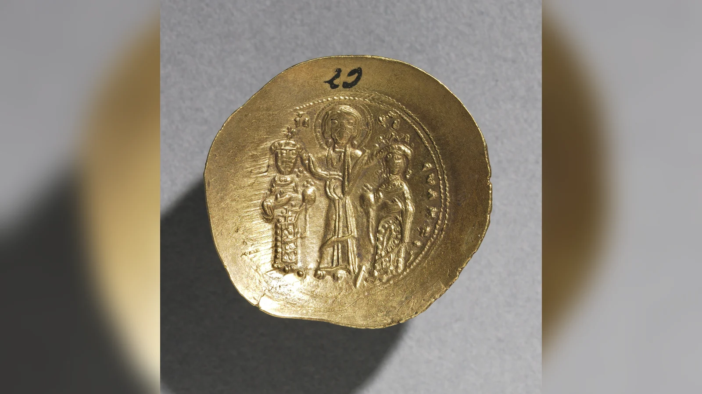
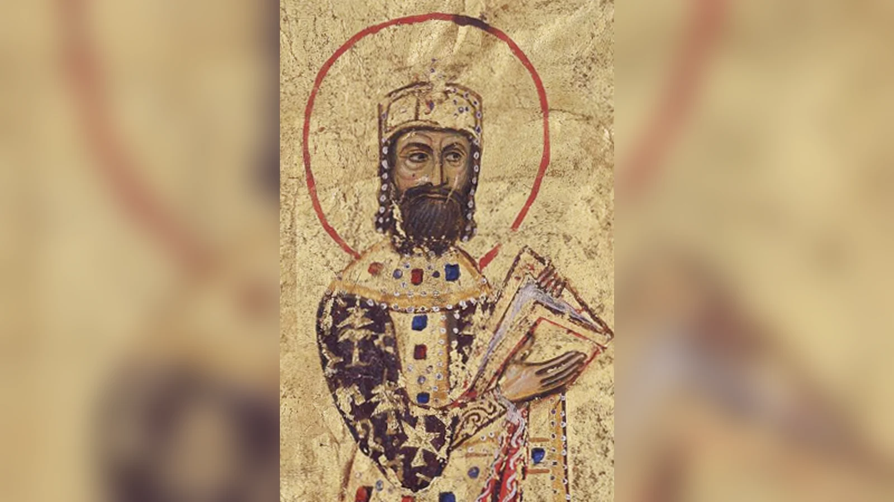
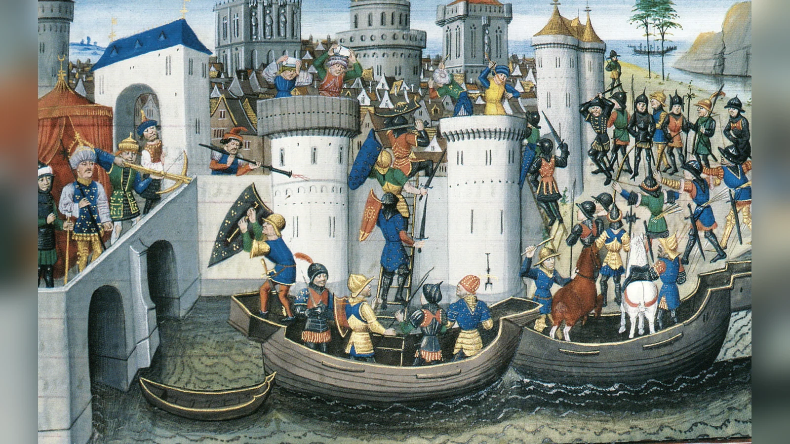
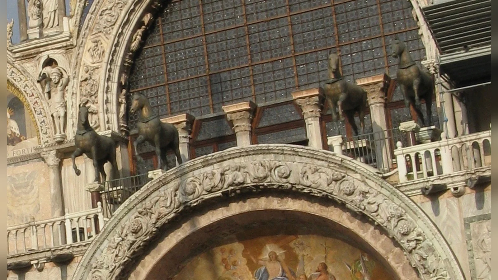
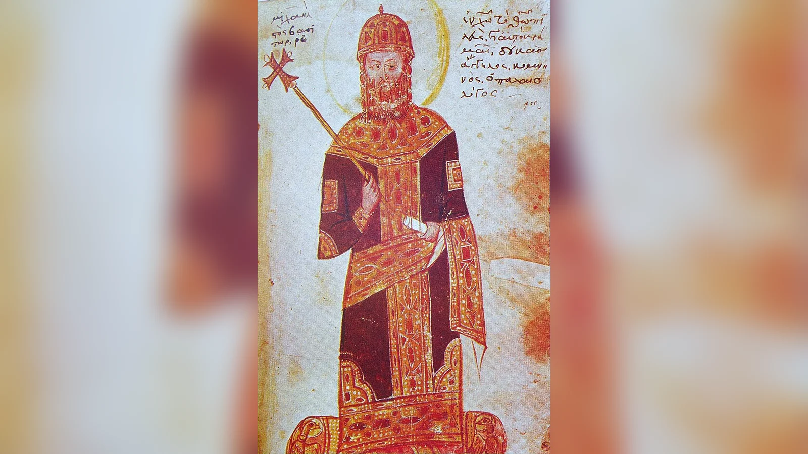
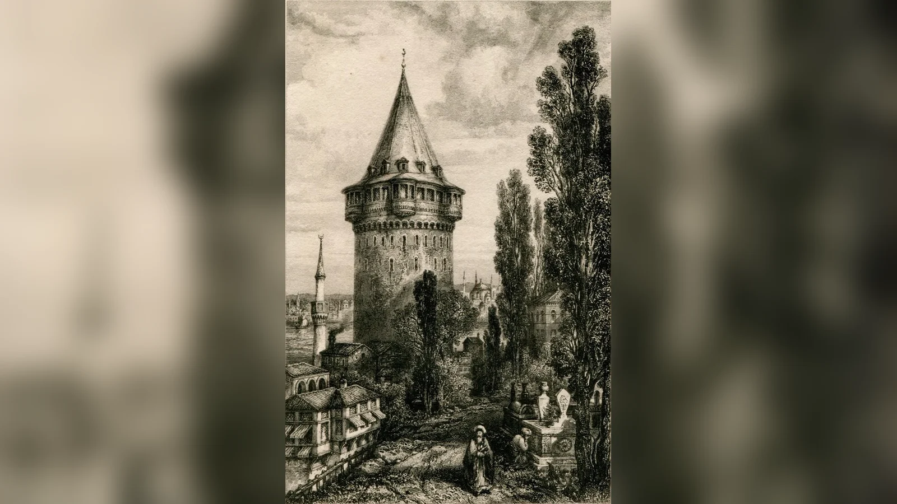
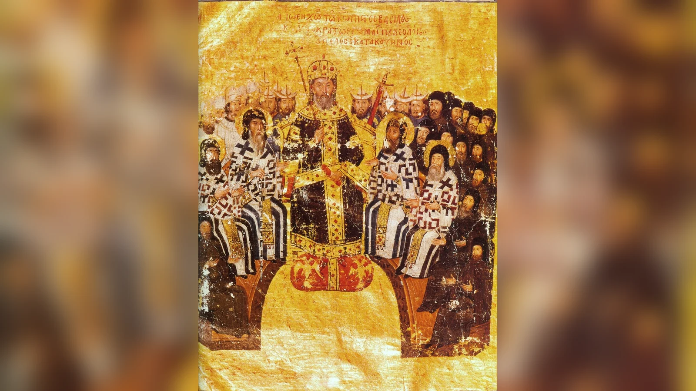
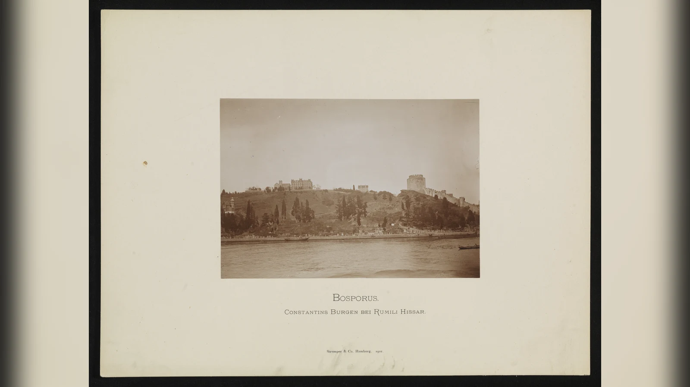
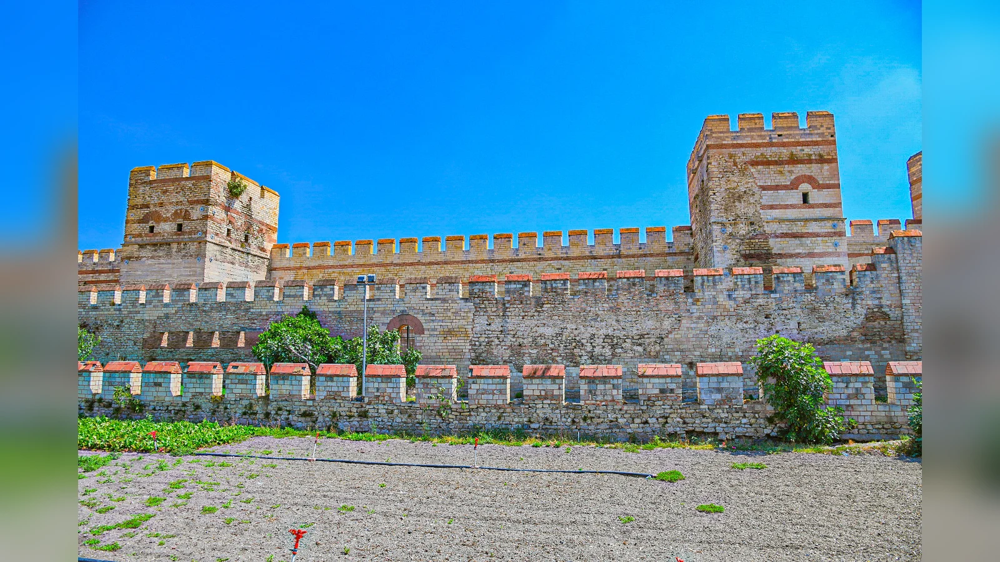
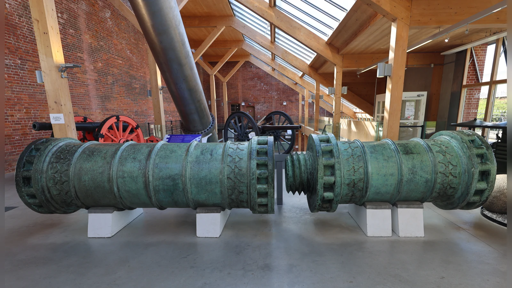

Bizans İmparatorluğu 29 Mayıs 1453'te, II. Mehmed'in ordusunun Konstantinopolis'i ele geçirmesiyle siyasi varlığını kaybetti. Fakat "Bizans İmparatorluğu neden yıkıldı?" sorusunun cevabı 1453 kuşatmasında kullanılan büyük toplardan çok daha geriye uzanır. Anadolu'daki vergi ve asker kaynaklarının giderek kaybedilmesi, hanedan mücadeleleri, 1204'te Konstantinopolis'in Haçlılar tarafından işgal edilmesi, imparatorluğun parçalanması, İtalyan denizci cumhuriyetlerine verilen ticari ayrıcalıkların yarattığı bağımlılıklar, 14. yüzyıl iç savaşları, nüfus ve gelir kaybı ile Osmanlıların hem Anadolu'da hem Balkanlar'da genişlemesi aynı sürecin birbirini besleyen parçalarıydı. 1453 bu sorunların başlangıcı değil, uzun süredir küçülen bir devletin çok daha büyük bir askerî ve mali güçle karşılaştığı son aşamaydı.
İmparatorluğun yöneticileri ve halkı devletlerini modern tarih kitaplarındaki anlamıyla "Bizans İmparatorluğu" diye adlandırmıyordu; siyasi kimlikleri Roma İmparatorluğu ve Romalılarla bağlantılıydı. "Bizans" bugün Doğu Roma İmparatorluğu'nun ortaçağ tarihini anlatmak için yerleşmiş modern bir tarihçilik terimidir. 1453'teki devlet de I. Justinianus'un 6. yüzyılda Akdeniz'in geniş bölgelerini yöneten imparatorluğuyla aynı ölçekte değildi. Son imparator XI. Konstantinos'un doğrudan denetlediği alan Konstantinopolis ve çevresindeki sınırlı topraklara kadar daralmıştı. Şehir hâlâ güçlü surlara ve büyük sembolik ağırlığa sahipti; fakat onu savunacak nüfus, para ve askerî kaynaklar geçmiş yüzyıllarla karşılaştırılamayacak kadar küçülmüştü.
Bizans İmparatorluğu Ne Zaman ve Kim Tarafından Yıkıldı?
Kısa cevap açıktır: Bizans İmparatorluğu'nun Konstantinopolis merkezli siyasi varlığı, Osmanlı Sultanı II. Mehmed'in şehri 29 Mayıs 1453'te ele geçirmesiyle sona erdi. Son imparator XI. Konstantinos Palaiologos son saldırı sırasında öldü. Ancak "yıkılış" kelimesi Bizans tarihinde tek bir güne indirgenemeyecek kadar karmaşıktır.
1204'te Dördüncü Haçlı Seferi orduları Konstantinopolis'i ele geçirip yağmaladığında başkentteki imparatorluk gerçekten ortadan kalktı. Topraklarında Latin İmparatorluğu ve başka Latin siyasi yapıları kuruldu; Bizans geleneğini sürdüren İznik, Epir ve Trabzon gibi merkezler ortaya çıktı. İznik merkezli devlet 1261'de Konstantinopolis'i geri aldı ve imparatorluğu başkentte yeniden kurdu. Bu nedenle 1204'ü Bizans'ın kesin sonu saymak kronolojik olarak yanlıştır; fakat işgalin devletin daha sonra aşamadığı büyük bir kırılma yarattığını söylemek mümkündür.
1453 ise farklıdır. Konstantinopolis'in kaybından sonra imparatorluğu başkentte yeniden kurabilecek karşılaştırılabilir bir merkez kalmadı. Mora Despotluğu 1460'a, Trabzon İmparatorluğu 1461'e kadar sürdü. Trabzon, 1204 sonrası Bizans dünyasının ardıl devletlerinden biriydi; 1453'teki Konstantinopolis imparatorluğunun sıradan bir eyaleti değildi.
Bizans Gerçekten Bin Yıl Boyunca Sürekli Geriledi mi?
Bizans tarihini 395'ten 1453'e uzanan kesintisiz bir çöküş çizgisi gibi anlatmak, imparatorluğun en önemli özelliklerinden birini gözden kaçırır: devlet defalarca ağır krizlerden çıkabildi. 7. yüzyılda Sasani savaşları, Arap fetihleri, Balkanlardaki dönüşümler ve büyük toprak kayıpları yaşandı. Buna rağmen yönetim, vergi ve askerî örgütlenme değiştirildi; imparatorluk daha küçük bir coğrafyada yaşamaya devam etti.
- ve 10. yüzyıllarda askerî ve siyasi toparlanma belirgindi. Makedon Hanedanı döneminde doğu sınırlarında ilerlemeler yaşandı; II. Basileios döneminde Balkanlar'daki imparatorluk otoritesi genişledi. 11. yüzyılın ikinci yarısındaki krizlerin ardından Komnenoslar da devleti yeniden örgütleyebildi. Bu örnekler 1453'ün önceden belirlenmiş bir son olmadığını gösterir.
Son yüzyıllardaki fark, krizlerin her birinden giderek daha dar bir ekonomik ve demografik tabanla çıkılmasıydı. Eski toparlanma mekanizmaları tamamen kaybolmadı, fakat onları besleyen kaynaklar azaldı. Bu yüzden "çürüme" yerine devlet kapasitesinin hangi dönemlerde daraldığını ve hangi dönemlerde yeniden büyüdüğünü izlemek daha açıklayıcıdır.
1071 Malazgirt Savaşı Bizans'ın Sonunu mu Başlattı?

26 Ağustos 1071'de IV. Romanos Diogenes'in ordusu Malazgirt yakınlarında Sultan Alp Arslan'ın Selçuklu kuvvetlerine yenildi ve imparator esir düştü. Bu olay Bizans tarihinin büyük askerî yenilgilerinden biriydi, fakat "Anadolu o gün tamamen kaybedildi" cümlesi doğru değildir. Romanos'un ordusu bütünüyle yok olmadı; imparator anlaşma sonrasında serbest bırakıldı. Asıl yıkıcı gelişmeler, onun Konstantinopolis'e dönmeye çalıştığı sırada başlayan iktidar mücadelesiyle hızlandı.
Romanos'un rakipleri onu tahttan indirdi. İç savaş, merkezi yönetimin Anadolu'daki savunmayı koordine etmesini zorlaştırdı. Selçuklu ve Türkmen grupları tek merkezden yönetilen kesintisiz bir Anadolu fetih planı uygulamıyordu; farklı liderler siyasi boşluklardan yararlanarak yerleşiyor, akın yapıyor ve yerel güçlerle değişken ilişkiler kuruyordu. Bizans içindeki rakipler de zaman zaman Türk birliklerini kendi mücadelelerinde kullandı.
Malazgirt'in uzun vadeli önemi savaş meydanındaki kayıptan daha geniştir. Yenilgi, zaten gerilimli siyasal düzeni sarsarken ardından gelen iç mücadeleler Anadolu savunmasını zayıflattı. Yine de süreç geri döndürülemez değildi. I. Aleksios Komnenos döneminde ve Birinci Haçlı Seferi sonrasında Bizans Batı Anadolu kıyılarında önemli bölgeleri yeniden denetim altına aldı. Malazgirt önemli bir dönemeçti; Bizans'ın ölüm tarihi değildi.
Anadolu'nun Kaybı Bizans'ı Neden Bu Kadar Zayıflattı?
Anadolu Bizans için haritadaki geniş bir renk alanından ibaret değildi. Tarım üretimi, arazi gelirleri, şehirler, ticaret yolları, yerel seçkinler ve askerî insan gücü imparatorluk kapasitesinin önemli bölümünü burada oluşturuyordu. Anadolu'daki kontrolün daralması, devletin hem gelir hem de savunma kaynaklarını etkiledi.
Ortaçağ devletlerinde ekonomi modern bütçe ve milli gelir kavramlarıyla açıklanamaz. Yine de temel ilişki nettir: vergi alınabilen toprak ve nüfus azaldığında hükümdarın asker besleme, kaleleri koruma, donanma kurma ve memurları finanse etme imkânı da daralır. Kaybedilen bölgeler yalnız düşmana geçen arazi değildi; imparatorluğun bir sonraki savaşı finanse etmesini sağlayacak kaynaklardı.
Bu kayıp bir döngü yarattı. Gelir ve asker kaynağı azaldıkça sınırları korumak zorlaştı; sınırlar geriledikçe yeni gelir alanları kaybedildi. Bizans diplomasi, paralı asker, evlilik ittifakları ve yerel güçlerle anlaşmalar gibi yöntemlerle açığı kapatmaya çalıştı. Bazıları başarılı oldu, fakat kendi kaynak tabanının küçülmesini bütünüyle telafi edemedi. Bithynia'daki Bursa, İznik ve İzmit'in 14. yüzyılda Osmanlıların eline geçmesi, bu süreci Konstantinopolis'in hemen yakınındaki stratejik alana taşıdı.
Komnenoslar Bizans'ı Nasıl Toparladı?

I. Aleksios Komnenos 1081'de tahta çıktığında imparatorluk Selçuklu baskısının yanında Norman saldırıları, Peçenek tehdidi ve mali sorunlarla karşı karşıyaydı. Aleksios'un saltanatı, Bizans'ın ağır krizden yeniden çıkabileceğinin güçlü örneklerinden biridir. Birinci Haçlı Seferi hem fırsat hem sorun yarattı. Haçlı liderleriyle ilişkiler gerilimli olsa da İznik ve Batı Anadolu'daki bazı bölgeler yeniden Bizans denetimine girdi.
II. İoannes ve I. Manuel dönemlerinde Komnenos devleti Balkanlar, Anadolu ve Doğu Akdeniz'de etkin diplomasi yürüttü. Manuel'in politikası İtalya'dan Haçlı devletlerine, Macaristan'dan Anadolu'ya uzanan geniş bir alana müdahale etmeye çalışıyordu. Bu faaliyetler Bizans'ın 12. yüzyılda ölmekte olan bir devlet olmadığını gösterir.
1176 Myriokephalon yenilgisi sık sık "Anadolu'nun kesin kaybı" diye sunulur. Bizans ordusu savaş sonrasında ortadan kalkmadı ve Batı Anadolu'daki varlık sürdü. Yenilgi, Selçuklu Anadolu'sunu ortadan kaldırmaya yönelik büyük stratejik hedefin sınırlarını gösterdi. Komnenos düzeninin zayıflığı ise hanedan ve aristokrat akrabalık ağlarına güçlü biçimde dayanmasıydı. Manuel'in 1180'de ölümünden sonra saray mücadeleleri büyüdü; bu istikrarsızlık 1204'ün tek nedeni değildi, fakat imparatorluğun kırılganlığını artırdı.
1204'te Konstantinopolis Neden Haçlılar Tarafından İşgal Edildi?

Dördüncü Haçlı Seferi başlangıçta Konstantinopolis'i fethetmek için ilan edilmedi. Papa III. Innocentius'un hedefi kutsal topraklar mücadelesiydi ve seferin Mısır üzerinden ilerlemesi planlanıyordu. Sorun, ordunun Venedik'le yaptığı taşıma anlaşmasının mali yükünü karşılayamamasıyla başladı.
Venedik büyük bir filo hazırlamıştı, fakat beklenenden az Haçlı Venedik'te toplandı. Borcun ödenememesi üzerine Doçe Enrico Dandolo, Haçlıların Venedik'in Adriyatik'teki rakibi Zara'ya saldırmasına yardım etmesini istedi. Zara Hristiyan bir şehirdi ve saldırı papalığın tepkisini çekti. Sefer daha bu aşamada ilk hedefinden uzaklaşmıştı.
Ardından Bizans taht mücadelesi devreye girdi. Tahttan indirilmiş II. İsaakios Angelos'un oğlu Aleksios, kendisinin ve babasının yeniden iktidara getirilmesi karşılığında Haçlılara büyük para, askerî destek ve kilise birliği vaat etti. 1203'te Haçlılar Konstantinopolis önüne geldi ve iktidar değişti. Vaatlerin yerine getirilmesi mümkün olmayınca şehirde Latin karşıtı tepki büyüdü; yeni yönetim devrildi ve ilişki savaşa dönüştü. 12 Nisan 1204'te şehir düştü.
Bu zinciri yalnız "Venedik baştan beri şehri istiyordu" veya "Katolikler Ortodokslara ihanet etti" cümlesiyle açıklamak yetersizdir. Venedik çıkarları, Haçlı borcu, Bizans hanedan siyaseti, sefer liderlerinin kararları ve 1203--1204 krizi birbirine bağlandı.
1204 Yağması Bizans'a Ne Yaptı?

Konstantinopolis'in yağmalanması maddi, siyasi ve psikolojik bakımdan olağanüstü ağırdı. Niketas Khoniates sarayların, kiliselerin ve özel mülklerin yağmalanmasını güçlü bir ahlaki öfkeyle anlatır. Olaylara yakın tanıklığı değerlidir; metni yine de tarafsız bir envanter değildir.
Sanat eserleri, kutsal emanetler ve değerli malzemeler Batı'ya taşındı. Bugün Venedik'te San Marco Bazilikası'yla özdeşleşen bronz atlar Konstantinopolis'ten götürülen en ünlü eserler arasındadır ve genellikle Hipodrom'la ilişkilendirilir. Bunları Ayasofya'dan götürülmüş eserler diye kesinleştirmek güvenli değildir.
Asıl uzun vadeli hasar siyasi parçalanmaydı. Konstantinopolis'te Latin İmparatorluğu kuruldu; Bizans aristokrasisi ve yönetim gelenekleri İznik, Epir ve Trabzon gibi farklı merkezlerde devam etti. Eski imparatorluk coğrafyası tek merkezden yönetilen sistem olmaktan çıktı. Venedik de Ege ve ticaret ağlarında önemli kazanımlar elde etti.
1204'ün 1453'ten daha önemli olduğunu kesin ölçüyle kanıtlamak mümkün değildir; iki olay farklı niteliktedir. Fakat 1204'ü büyük kırılma sayan yorum güçlüdür. Çünkü 1261'de başkent geri alınsa da 12. yüzyıldaki siyasi, ekonomik ve askerî coğrafya yeniden kurulamadı. Başkent geri geldi; başkenti besleyen imparatorluk aynı ölçüde geri gelmedi.
1204'ün etkisini yalnız Konstantinopolis'teki üç günlük yağmayla sınırlamak da tabloyu küçültür. Başkentin kaybı, imparatorluk seçkinlerinin mülk ve gelir ağlarını değiştirdi; Ege adaları ve limanları üzerinde yeni güç dengeleri kuruldu; Venedik, Latin İmparatorluğu ve bölgesel hanedanlar eski Bizans alanlarını paylaşmaya çalıştı. İznik yönetiminin 1261'de başarıya ulaşması, bu parçalanmanın bütün sonuçlarını tersine çevirmedi. Bizans'ın sonraki yüzyılda mücadele ettiği coğrafya artık 12. yüzyıldaki coğrafya değildi.
İznik devletinin başarısı aynı zamanda 1204'ün "anında ölüm" olmadığını gösterir. İznik yöneticileri vergi toplayabildi, ordu kurabildi, kilise kurumlarını yeniden örgütleyebildi ve rakip Bizans merkezleriyle mücadele edebildi. Sorun, Konstantinopolis geri alındığında bu başarılı bölgesel yapının kaynaklarının çok daha büyük ve pahalı bir imparatorluk başkentini taşımak zorunda kalmasıydı. Başkent geri kazanımı prestij sağlarken yeni mali yükler de doğurdu.
1204 sonrası parçalanmanın başka bir sonucu, Bizans'ın rakiplerinin imparatorluğun eski coğrafyasına kalıcı biçimde yerleşmesiydi. Latin prenslikleri, Venedik üsleri ve Ege'deki yeni siyasi düzen, Bizans'ın deniz alanındaki eski hareket serbestisini daralttı. Böylece 1204 yalnız geçmiş servetin kaybı değil, gelecekteki gelir ve stratejik seçeneklerin de daralmasıydı.
1261'de Konstantinopolis Geri Alındıysa Bizans Neden Toparlanamadı?

İznik İmparatorluğu, 1204 sonrası Bizans siyasi geleneğinin en başarılı merkezine dönüştü. VIII. Mihail Palaiologos'un kuvvetleri 1261'de Konstantinopolis'i geri aldı. Bu büyük siyasi başarıydı; fakat şehir ve devlet 1204 öncesindeki maddi gücüne dönmedi.
Konstantinopolis'in nüfusu ve ekonomik canlılığı eski düzeyinden uzaktı. Saraylar, kiliseler ve altyapı onarım istiyordu. İmparatorluk aynı anda Balkanlarda Latin ve diğer rakiplere, Anadolu'da Türk beyliklerine karşı savunma yapmak zorundaydı. VIII. Mihail'in Batı'dan gelebilecek yeni Latin saldırısını önlemeye yoğunlaşması anlaşılabilir bir tercihti, ancak Anadolu sınırındaki baskı sürdü.
1261 sonrasında temel sorun, başkentin siyasi değerinin devletin ekonomik tabanından daha büyük hâle gelmesiydi. Konstantinopolis pahalı savunma ve diplomasi gerektiriyordu; onu destekleyecek topraklar küçülmüştü. Eski imparatorluk başkentini geri almak, eski vergi alanlarını otomatik olarak geri getirmedi.
Palaiologos dönemini yalnız çürüme diye tanımlamak da yanlıştır. Sanat, teoloji, edebiyat ve entelektüel üretim devam etti; Palaiologos Rönesansı denilen kültürel canlanma siyasi daralma çağında ortaya çıktı. Devlet kapasitesinin küçülmesi toplumun bütün alanlarının aynı hızla çöktüğü anlamına gelmiyordu.
Venedik ve Ceneviz Ayrıcalıkları Bizans Ekonomisini Nasıl Etkiledi?

Bizans'ın İtalyan denizci cumhuriyetleriyle ilişkisi 1204'ten önce başlamıştı. I. Aleksios döneminde Venedik'e verilen ticari ayrıcalıklar Norman tehdidine karşı deniz desteği sağlamanın araçlarından biriydi. Kısa vadeli askerî ihtiyaç karşılığında gümrük avantajı vermek dönemin koşullarında rasyonel pazarlık olabilirdi.
Sorun, imparatorluğun kendi donanma ve ticaret kapasitesi zayıfladıkça ilişkinin dengesinin değişmesiydi. Venedikli ve Cenevizli tüccarlar Doğu Akdeniz ve Karadeniz ticaretinde güçlü ağlar kurdu. 1261'de VIII. Mihail, Ceneviz desteği için Nymphaion Antlaşması'yla önemli ayrıcalıklar tanıdı. Şehir geri alındıktan sonra Cenevizlilerin Galata/Pera'daki varlığı güçlendi.
"İtalyanlar Bizans ekonomisini ele geçirdi" demek kaba bir genellemedir. Bizanslı tüccarlar ortadan kalkmadı. Fakat imparatorluk deniz ticaretinden elde edebileceği gelirlerin önemli bölümünü avantajlı şartlara sahip yabancı tüccarlarla paylaşmak zorunda kaldı. Donanma zayıfladıkça dış ortaklara ihtiyaç arttı; dış ortaklara ihtiyaç arttıkça yeni ayrıcalıklar vermek kolaylaştı. Kısa vadeli çözüm, uzun vadeli hareket alanını daraltabiliyordu.
Bizans Ordusu Neden Zayıfladı?
Bizans ordusunun son yüzyıllardaki zayıflamasını "Romalılar savaşmayı unuttu" gibi kültürel açıklamalarla anlamak mümkün değildir. Askerî kapasite devletin gelir, nüfus, toprak ve örgütlenme gücüyle bağlantılıydı. Anadolu ve Balkan toprakları küçüldükçe asker toplama ve finanse etme imkânı azaldı.
Paralı asker kullanımı Bizans'a özgü son dönem hastalığı değildi. Roma ve Bizans orduları yüzyıllar boyunca farklı kökenlerden askerleri hizmete aldı. Sorun paralı askerin varlığı değil, devletin onu düzenli ödeyip denetleyebilme kapasitesiydi. Mali sıkıntı büyüdüğünde birlikler ücret talebiyle baskı yapabiliyor, başka işverenlere geçebiliyor veya siyasete müdahil olabiliyordu.
Donanmadaki gerileme de stratejik sonuç doğurdu. Konstantinopolis bir deniz şehriydi; Ege, Marmara ve Karadeniz bağlantıları savunma ve ticaret açısından hayatiydi. Güçlü bir imparatorluk donanmasının yerini giderek Venedik veya Ceneviz desteğine duyulan ihtiyaç aldığında dış aktörlerin ağırlığı arttı. En büyük sorun aynı anda birden fazla tehdidi karşılayamamaktı.
Taht Kavgaları ve İç Savaşlar Bizans'ı Nasıl Tüketti?

- yüzyıl iç savaşları Bizans'ın son dönemindeki en yıkıcı süreçlerden biriydi. II. Andronikos ile torunu III. Andronikos arasındaki mücadele 1320'lerde devleti böldü. III. Andronikos 1341'de öldüğünde küçük yaştaki V. İoannes'in naipliği çevresindeki iktidar mücadelesi yeni ve daha ağır savaşa dönüştü.
<!-- -->VI. İoannes Kantakuzenos ile naiplik arasındaki 1341--1347 savaşı yalnız saray entrikası değildi. Aristokrat gruplar, şehirler, sosyal gerilimler ve bölgesel çıkarlar çatışmaya girdi. Sırplar, Bulgarlar ve Türk güçleri tarafların müttefiki olarak müdahil oldu. Kantakuzenos'un Türk birliklerinden yararlanması dönemin siyasi pratiği içinde anlaşılmalıdır; fakat bu ilişkiler Türk askerî güçlerinin Trakya ve Balkan coğrafyasına daha yakından girmesine katkı sağladı.
İç savaşların maliyeti savaş meydanındaki kayıplarla sınırlı değildi. Trakya'daki üretim alanları tahrip oldu, vergi toplamak zorlaştı, şehirler taraf değiştirdi ve merkezi otorite zayıfladı. Bir hükümdarın rakibini yenmek için dış güçten aldığı destek savaş sonrasında yeni tavizler yaratabiliyordu. Devlet zayıf olduğu için iç savaşlar çıkmadı; iç savaşlar da devleti daha zayıf hâle getirdi.
1340'ların savaşı sırasında Stefan Dušan yönetimindeki Sırp devleti de Bizans'ın zayıflığından yararlandı ve Makedonya ile Yunanistan'ın geniş kesimlerinde ilerledi. Bu genişleme kalıcı bir Sırp imparatorluğuna dönüşmedi; Dušan'ın ölümünden sonra siyasi yapı parçalandı. Fakat Bizans açısından önemli olan, kaybedilen bölgelerin otomatik olarak Konstantinopolis'e dönmemesiydi. Bir rakibin zayıflaması Bizans'ın eski kaynaklarını geri kazanmasına yetmiyordu.
İç savaşlar para sistemindeki ve mali yönetimdeki baskıyı da ağırlaştırdı. İmparatorluk seçkinleri rakip taraflara bölündüğünde merkezi devletin taşradan düzenli gelir çekme kapasitesi düştü. Savaşın finanse edilmesi için değerli kaynaklar harcanırken uzun vadeli savunma yatırımları ertelenebiliyordu. Bu nedenle iç savaş ile dış tehdit birbirinden ayrı iki sorun değildi: içerideki mücadele dışarıdaki aktörlere fırsat, dışarıdan alınan yardım ise içeride yeni bağımlılıklar yaratıyordu.
Bu döngü 14. yüzyıl Bizans tarihinin en açıklayıcı mekanizmalarından biridir. Bir taht adayı kısa vadede iktidarı kazanmak için dış destek kullandığında kendi açısından mantıklı davranmış olabilir. Fakat devlet düzeyinde bakıldığında, her yeni müdahale rakip güçlerin Bizans toprakları, limanları ve siyaseti hakkında daha fazla nüfuz kazanmasına yardım ediyordu.
Kara Ölüm ve Nüfus Kaybı Bizans'ı Nasıl Etkiledi?
Kara Ölüm 1347'de Konstantinopolis'e ulaştı ve sonraki yıllarda dalgalar hâlinde geri döndü. Çağdaş anlatılar ağır can kayıplarından söz eder, fakat Ortaçağ şehirleri için kesin nüfus ve ölüm oranları vermek zordur. Rakamları modern nüfus sayımı kesinliğiyle kullanmak yanıltıcıdır.
Salgının ekonomik etkisi açıktır. İnsan kaybı vergi mükellefi, zanaatkâr, çiftçi ve asker kaybı demekti. Zaten iç savaşlardan zarar görmüş bölgelerde üretim ve gelir tabanı daha da daraldı. Konstantinopolis'in nüfusunun geç Bizans döneminde eski yüzyıllardaki düzeyinin çok altında olduğu kabul edilir; bunun nedeni yalnız veba değil, savaşlar, toprak kayıpları ve ekonomik dönüşümlerin birleşimiydi.
Veba Bizans'a özgü değildi. Osmanlı toprakları, Balkanlar, İtalya ve Avrupa'nın geniş kesimleri de salgından etkilendi. Bu nedenle Kara Ölüm'ü tek başına çöküş nedeni saymak açıklayıcı değildir. Daha önemli soru, salgından sonra hangi devletlerin kayıpları telafi edecek toprak, nüfus ve mali kaynaklara sahip olduğudur.
Kiliselerin Ayrılması Bizans'ın Yıkılmasına Neden Oldu mu?
Roma ve Konstantinopolis kiliseleri arasındaki ayrılığı 1054'te bir günde tamamlanan kesin kopuş gibi anlatmak doğru değildir. Papalık otoritesi, litürjik uygulamalar, Filioque meselesi ve siyasi rekabet uzun süredir gerilim yaratıyordu. 1054'teki karşılıklı aforozlar sonradan ayrılığın simgesel tarihi hâline geldi.
1204 yağması ilişkileri daha ağır biçimde zehirledi. Teolojik anlaşmazlık Konstantinopolis'in Latin Hristiyanlar tarafından işgal edilmesi ve yağmalanmasıyla birleşti. Buna rağmen Bizans yöneticileri sonraki yüzyıllarda Batı'dan askerî destek sağlamak amacıyla kilise birliği görüşmelerini sürdürdü. 1274 Lyon ve 1439 Floransa konsilleri bu siyasetin önemli aşamalarıdır.
"Latin külahı görmektense Türk sarığını tercih ederim" sözü genellikle Loukas Notaras'a atfedilir. Aktarım bağlamı ve sonraki kullanımı nedeniyle bunu bütün Bizans toplumunun ortak görüşü gibi sunmak doğru değildir. Kilise ayrılığı Batı yardımını ve siyasi güveni zorlaştırdı, fakat ordunun, verginin ve toprağın kaybını tek başına açıklamaz.
Batı Bizans'a Neden Yeterli Yardım Göndermedi?
"Avrupa Bizans'ı yalnız bıraktı" ifadesi Ortaçağ Batı dünyasını tek merkezden karar veren devlet gibi gösterir. Papalık, Venedik, Ceneviz, Macaristan, Burgonya, Fransa ve başka güçlerin çıkarları aynı değildi. 15. yüzyıl Avrupa'sı kendi savaşları ve rekabetleriyle parçalıydı.
Osmanlılara karşı büyük sefer girişimleri tamamen yok değildi. 1444 Varna Seferi ve 1448 II. Kosova Savaşı, Osmanlı genişlemesini durdurmaya yönelik ciddi girişimlerdi ve yenilgiyle sonuçlandılar. Bu sonuçlar 1453 öncesinde yeni büyük koalisyon kurma ihtimalini azalttı.
1453 savunmasında Batılı askerler vardı. Cenevizli Giovanni Giustiniani ve beraberindeki savaşçılar kara surlarının savunmasında önemli rol oynadı; Venedikliler ve başka Latinler de şehirde savaştı. Bu gerçek "hiç kimse yardım etmedi" iddiasını çürütür. Aynı zamanda gelen kuvvetlerin Osmanlı kaynaklarıyla kıyaslandığında çok sınırlı olduğunu değiştirmez.
Osmanlılar Bizans Topraklarını Nasıl Ele Geçirdi?

Osmanlı yükselişi bir gecede gerçekleşmedi. 13. yüzyılın sonlarında Bithynia sınırında ortaya çıkan Osmanlı beyliği, Bizans'ın Anadolu savunmasının zayıfladığı ortamda büyüdü. Bursa 1326'da, İznik 1331'de, İzmit 1337'de Osmanlıların eline geçti. Konstantinopolis'in doğusundaki önemli merkezler kaybedildi.
Osmanlıların 1350'lerde Gelibolu çevresinde kalıcılaşması Trakya'ya düzenli asker sevkini kolaylaştırdı. Edirne'nin Osmanlı kontrolüne geçişinin kesin tarihi kaynaklarda tartışmalıdır; 1360'ların başı genel çerçevedir. Şehir daha sonra Osmanlı siyasetinin başlıca merkezlerinden biri oldu.
Osmanlı başarısını yalnız "gaza" veya askerî üstünlükle açıklamak yetersizdir. Balkan siyasi dünyası parçalıydı. Osmanlı hükümdarları doğrudan fetih kadar vasallık, evlilik, haraç, ittifak ve rakip hanedanları destekleme yöntemlerini kullandı. Bizans imparatorları da zaman zaman Osmanlı hükümdarlarıyla ittifak kurdu veya rakiplerine karşı Osmanlı askerî desteği aldı.
Yıldırım Bayezid Konstantinopolis'i baskı altında tuttu; fakat Timur'un 1402 Ankara Savaşı zaferi ve ardından Osmanlı Fetret Devri Bizans'a nefes alma alanı sağladı. Bu ara dönem Osmanlı zaferinin önceden belirlenmiş olmadığını gösterir. Fetret sonrasında Osmanlı merkezi gücü yeniden kuruldu; II. Murad dönemindeki Varna ve II. Kosova zaferleri de 1453 öncesindeki güç dengesini belirledi.
Osmanlıların avantajlarından biri, ele geçirdikleri bölgeleri yalnız yağma sahası olarak bırakmayıp giderek vergi ve asker üreten siyasi düzene bağlayabilmeleriydi. Balkanlardaki vasallık ilişkileri her zaman doğrudan ilhak anlamına gelmiyordu; yerel hanedanlar bir süre kendi bölgelerinde kalabiliyor, vergi ödüyor veya askerî yükümlülük üstlenebiliyordu. Bu esneklik Osmanlıların aynı anda çok geniş alanları doğrudan bürokrasiyle yönetme zorunluluğunu azaltıyordu.
Bizans'ın durumu ters yönde ilerliyordu. Kaybedilen her bölge Konstantinopolis'in gelir alanını küçültürken Osmanlıların seferberlik havuzunu büyütebiliyordu. Bu simetrik olmayan süreç, iki devlet arasındaki farkın neden giderek açıldığını açıklar. Bir tarafın kaybı çoğu zaman diğer tarafın yalnız toprak değil, vergi, yol, kale ve insan gücü kazanması anlamına geliyordu.
Yine de Osmanlı genişlemesinin kesintisiz olmadığını vurgulamak gerekir. Ankara yenilgisi ve Fetret Devri, Osmanlı siyasi yapısının da kırılgan olabildiğini gösterdi. Bizans diplomasisi şehzadeler arasındaki mücadelelerden yararlanmaya çalıştı. Fakat Osmanlı merkezi gücü yeniden kurulduğunda Bizans'ın bu geçici rahatlamayı kalıcı toprak ve gelir kazanımına dönüştürecek kapasitesi kalmamıştı.
1453 Öncesinde Bizans Ne Kadar Küçülmüştü?
1453'e gelindiğinde imparatorun doğrudan kontrolündeki topraklar Konstantinopolis ve çevresindeki sınırlı bölgelerle daralmıştı. Mora'daki Despotluk Palaiologos hanedanının üyelerince yönetiliyordu, fakat başkentten yönetilen sıradan bir eyalet gibi düşünülmemelidir. Trabzon ayrı bir Bizans ardılı devletti.
Konstantinopolis'in surları yaklaşık bin yıl boyunca büyük orduları durdurmuştu. Fakat surların uzunluğu aynı kalırken onları savunacak devlet küçülmüştü. 5. yüzyılda inşa edilmiş dev savunma sistemini 15. yüzyılda çok daha sınırlı nüfus ve asker gücü korumak zorundaydı.
Şehrin nüfusu için verilen rakamlar tahmindir. Geç Antik ve orta Bizans dönemlerinin büyük metropolü 1453'te çok daha seyrek yerleşimliydi; surların içinde boş veya tarımsal kullanılan alanlar bulunuyordu. Kesin sayı tartışmalı olsa da büyük demografik daralma konusunda genel tablo açıktır. 1453 kuşatmasının en önemli arka planı buydu: dengesizlik top ile taş duvar arasında değil, iki devletin seferber edebildiği kaynaklar arasındaydı.
II. Mehmed Konstantinopolis'i Neden Almak İstedi?
II. Mehmed'in Konstantinopolis hedefinin tek bir nedeni yoktu. Şehir Osmanlıların Anadolu ve Balkan toprakları arasında stratejik konumdaydı. Boğazların denetimi askerî hareket ve ticaret açısından önemliydi. Bizans imparatorunun Osmanlı hanedan mücadelelerinde potansiyel rakip şehzadeleri kullanabilmesi de siyasi risk oluşturuyordu.
Konstantinopolis aynı zamanda olağanüstü sembolik değere sahip eski Roma imparatorluk başkentiydi. Şehrin fethi II. Mehmed'e yeni bir başkent yanında evrensel hükümdarlık iddiası için güçlü merkez sağladı. Fetih sonrasında Mehmed'in Kayser-i Rûm iddiasıyla ilişkilendirilmesi bu imparatorluk mirası siyasetinin parçasıdır.
1452'de Boğaz'ın Avrupa yakasında Rumeli Hisarı'nın inşası kuşatma hazırlığının somut adımıydı. Anadolu Hisarı'yla birlikte Boğaz trafiğini baskı altına alıyor, Karadeniz'den Konstantinopolis'e gelebilecek yardımı zorlaştırıyordu. Hazırlıklar top dökümüyle sınırlı değildi; ordu, donanma, yol, lojistik ve kuşatma araçları birlikte planlandı.
Konstantinopolis'in Surları Neden 1453'te Aşıldı?

Theodosius surları yüzyıllar boyunca çok sayıda kuşatmayı atlatmıştı. Çift sur hatları, hendek, kuleler ve arazi yapısı kara saldırısını son derece zorlaştırıyordu. 1453'te Osmanlı topçusu surları bir anda yok etmedi. Savunmacılar açılan gedikleri gece boyunca taş, toprak, ahşap ve başka malzemelerle kapatmaya çalıştı.
Kuşatmadaki Osmanlı asker sayısı kaynaklara göre büyük farklılık gösterir. Ortaçağ kroniklerinin çok yüksek rakamları propaganda ve anlatı geleneğinden etkilenebilir. Bizans ve müttefik savunmacıların sayısı çok daha azdı; yaklaşık yedi-sekiz bin savaşçı çevresindeki tahminler sık kullanılır, fakat ayrıntılar kaynak sorunları taşır.
Urban veya Orban adıyla bilinen top ustasının yaptığı büyük bombardalar önemliydi. Büyük taş gülleler surlarda hasar oluşturdu ve savunmacıları sürekli onarıma zorladı. Fakat erken dönem toplar yavaş ateş ediyor, yeniden doldurulmaları zaman alıyor ve ciddi lojistik gerektiriyordu. Şehir tek bir top teknolojisi sayesinde düşmedi.
Osmanlı donanması Haliç girişindeki zincir nedeniyle doğrudan içeri giremedi. Nisan 1453'te gemilerin bir bölümünün karadan Haliç'e indirilmesi savunmayı yeni cepheye yaydı. Bu olay tarihsel kaynaklarda güçlü biçimde yer alır. Etkisi zinciri fiziksel olarak kırmaktan çok Bizanslıların Haliç surlarını da aktif biçimde savunmak zorunda kalmasıydı.
Osmanlılar tünel girişimleri ve kuşatma araçları da kullandı; savunmacılar karşı tünellerle cevap verdi. Haftalar süren kuşatma küçük savunma kuvvetini sürekli baskı altında tuttu. 29 Mayıs'taki son saldırıda Giovanni Giustiniani'nin ağır yaralanarak savunma hattından ayrılması moralleri ve örgütlenmeyi etkiledi.
Kerkoporta adlı küçük kapının açık bırakıldığı ve şehrin bu nedenle düştüğü hikâyesi özellikle Doukas'ın anlatısıyla bilinir, fakat olayın belirleyici neden olduğuna dair güvenilir kanıt yoktur. Bir açık kapı haftalar süren kuşatmayı ve büyük kaynak dengesizliğini açıklayamaz. Başarı topçu baskısı, sayısal üstünlük, donanma, Haliç manevrası, kuşatma mühendisliği, sürekli saldırı ve savunmacıların sınırlı insan gücünün birleşiminden çıktı.
Kuşatma lojistiği de çoğu popüler anlatıda topların gölgesinde kalır. Büyük bombardaların dökülmesi kadar taşınması, mühimmatın hazırlanması, yolların düzenlenmesi ve haftalar boyunca ordunun beslenmesi gerekiyordu. Osmanlı devletinin bu masrafları karşılayabilmesi, top teknolojisinin kendisi kadar önemlidir. Aynı silahı satın almak, onu etkili kuşatma sistemine dönüştürmekle aynı şey değildir.
Savunmacılar da pasif değildi. Gedikleri kapattılar, Osmanlı tünellerine karşı kazılar yaptılar, denizden gelen saldırıları önlemeye çalıştılar ve surların en baskı altındaki kesimlerine birlik kaydırdılar. Bu aktif savunma, kuşatmanın neden haftalar sürdüğünü açıklar. Theodosius surları "toplar karşısında işe yaramaz" hâle gelmemişti; fakat küçük garnizonun her yeni hasara aynı hızla cevap vermesi giderek zorlaşıyordu.
Son saldırının başarısı da tek bir dramatik ana indirgenmemelidir. Giustiniani'nin yaralanması, surlardaki gedikler, savunmacıların yorgunluğu ve Osmanlıların dalgalar hâlindeki baskısı aynı anda etkili oldu. Kerkoporta hikâyesinin popülerliği, karmaşık askerî sonucu tek bir unutulmuş kapıyla açıklamanın çekiciliğinden gelir. Kaynaklar böyle bir kesinlik sağlamaz.
Bizans'ın Son İmparatoru XI. Konstantinos Nasıl Öldü?
XI. Konstantinos Palaiologos 1449'da imparator oldu ve 1453 kuşatmasında şehrin savunmasını yönetti. Son saldırı sırasında öldüğü genel olarak kabul edilir. Ölümünün tam biçimi kesin değildir.
Sonraki anlatılarda imparatorun savaşmadan önce yaptığı uzun konuşmalar, imparatorluk işaretlerini çıkarması, sıradan asker gibi çarpışması ve cesedinin belirli işaretlerden teşhis edilmesi gibi ayrıntılar bulunur. Kaynakların birbirinden ayrıldığı noktaları tek bir kamera kaydı gibi birleştirmek doğru değildir. Ona atfedilen son sözler de güvenilir çağdaş tutanaklarmış gibi kullanılmamalıdır.
XI. Konstantinos'un ölümü kısa sürede efsaneleşti. "Mermer İmparator" geleneğinde onun ölmediği, bir melek tarafından mermere çevrildiği ve bir gün şehri geri almak üzere döneceği anlatıldı. Bu tarihsel ölüm kaydı değil, fethin ardından oluşan kolektif hafızanın parçasıdır.
Bizans 1204'te mi, 1453'te mi Yıkıldı?
Tarihsel kronoloji açısından Konstantinopolis merkezli Bizans İmparatorluğu'nun sonu 1453'tür. 1204'te başkent düştü ve imparatorluk parçalandı; 1261'de İznik merkezli Bizans devleti şehri geri alarak Konstantinopolis'te imparatorluğu yeniden kurdu. Bu nedenle 1204'te tamamen sona erdi demek doğru değildir.
Fakat 1204'ün yapısal etkisi 1453'ü anlamak için vazgeçilmezdir. Başkentin elli yedi yıl kaybedilmesi, eski coğrafyanın rakip devletlere bölünmesi, Venedik ve Latin güçlerinin Ege'de güçlenmesi, servet ve nüfus kaybı, siyasi merkeziliğin kırılması 1261 sonrasında bütünüyle tersine çevrilemedi.
1453 farklı bir sondu. Konstantinopolis'i geri alabilecek güçlü bir Bizans ardıl merkezi yoktu. Mora 1460'ta, Trabzon 1461'de Osmanlıların eline geçti. Bu nedenle iki tarihi rakip cevaplar gibi görmek yerine farklı soruların cevapları olarak düşünmek daha yararlıdır: 1204 büyük parçalanma, 1453 Konstantinopolis merkezli imparatorluğun siyasi sonudur.
Bizans'ın Yıkılmasının Sonuçları Nelerdi?
Konstantinopolis fetih sonrasında Osmanlı başkentine dönüştü. II. Mehmed şehrin nüfusunu artırmak ve ekonomik hayatını canlandırmak için farklı toplulukları buraya yerleştirdi. Osmanlı sarayı ve yönetim kurumları zamanla şehirde yoğunlaştı. Ayasofya camiye çevrildi. Yapının Bizans'tan Osmanlı'ya uzanan tarihi, Antik Bilge'deki "Ayasofya'nın Hikâyesi: Bizans'tan Bugüne" makalesinde ayrıca ele alınabilir.
Ortodoks Patrikhanesi ortadan kaldırılmadı; Osmanlı düzeni içinde yeni konum kazandı. II. Mehmed'in Roma mirasına ilgisi de fethin yalnız eski şehri yok edip yenisini kurma biçiminde okunamayacağını gösterir. Osmanlı yönetimi fethedilen imparatorluk başkentinin siyasi prestijini kendi iktidar diline kattı.
"Bizanslı bilginler 1453'te İtalya'ya kaçtı ve Rönesans başladı" cümlesi aşırı basittir. Yunanca bilen Bizanslı bilginlerin İtalya'daki hümanist çevrelere katkısı gerçektir; fakat bu hareket 1453'ten önce başlamıştı ve Rönesans da daha önce gelişmekteydi.
Benzer biçimde "Türkler ticaret yollarını kapattı, Avrupalılar yeni yol aradı ve Amerika keşfedildi" zinciri de tek nedenli bir anlatıdır. Atlantik keşiflerinin arkasında denizcilik teknolojisi, devlet rekabeti, altın ve baharat ticareti, Portekiz'in Afrika kıyılarındaki uzun keşif programı ve başka nedenler vardı. 1453 önemli jeopolitik gelişmeydi; coğrafi keşiflerin tek nedeni değildi.
Fetih, Osmanlıların Balkanlar ve Doğu Akdeniz siyasetindeki konumunu da değiştirdi. Konstantinopolis'in elde tutulması Anadolu ve Rumeli arasındaki siyasi merkezin bütünleşmesini kolaylaştırdı. Şehir, sonraki Osmanlı seferlerinin lojistik üssü kadar hanedan meşruiyetinin de sahnesine dönüştü. II. Mehmed'in eski Roma başkentini kendi imparatorluk projesine katması, fetih sonrası siyasetin yalnız askerî genişleme olmadığını gösterir.
Bizans mirası ise 1453'te yok olmadı. Ortodoks kurumları, hukuk ve idare geleneklerinin bazı unsurları, sanat biçimleri, el yazmaları ve entelektüel ağlar farklı siyasi yapılarda yaşamaya devam etti. "Devlet sona erdi" ile "kültür sona erdi" aynı cümle değildir. Bu ayrım, Bizans'ın sonunu anlatırken en sık gözden kaçan noktalardan biridir.
1453'ün Orta Çağ'ın kesin bitiş tarihi olduğu iddiası da tarihçilikte kullanılan bir dönemlendirme kolaylığıdır. Avrupa'nın farklı bölgelerinde ekonomik, siyasi ve kültürel dönüşümler aynı tarihte başlamadı. Fetih çok önemli bir olaydı; fakat bütün kıtayı bir gecede Orta Çağ'dan Yeni Çağ'a geçiren evrensel bir düğme değildi.
Bizans'ın Yıkılışı Kaçınılmaz mıydı?
Bizans'ın 1453'teki sonunu geriye bakarak kaçınılmaz görmek kolaydır. Oysa imparatorluk daha önce de yok olabilecek ölçüde ağır krizler yaşamış ve çıkış yolları bulmuştu. 7. yüzyıl kayıpları, 11. yüzyıl krizi ve 1204 sonrası sürgün dönemi bunun örnekleridir.
Ankara Savaşı yakın bir karşı örnek sunar. Timur'un 1402'de Yıldırım Bayezid'i yenmesi Osmanlı devletini hanedan iç savaşına sürükledi ve Konstantinopolis üzerindeki baskıyı azalttı. Fetret Devri farklı sonuçlansaydı bölgesel güç dengesi de farklı gelişebilirdi. Varna veya II. Kosova'nın sonuçları farklı olabilirdi. Tarih bu ihtimallerin hiçbirini baştan dışlamıyordu.
Buna karşılık 1453'e gelindiğinde güç farkı olağanüstü büyümüştü. Osmanlılar Anadolu ve Balkanlarda geniş vergi ve insan kaynağını seferber edebiliyor, topçu ve donanma yatırımı yapabiliyor ve uzun kuşatmayı sürdürebiliyordu. Bizans ise güçlü surların arkasında sınırlı asker, para ve nüfusla direniyordu. Diplomasi daha önce defalarca zaman kazandırmıştı; artık diplomatik manevranın dayandığı maddi taban çok küçüktü.
Bizans'ın yıkılışını tek bir ölümcül hatayla açıklamak ikna edici değildir. Daha anlamlı olan, her büyük krizin devletin bir sonraki krize verebileceği cevabı nasıl etkilediğini izlemektir. Anadolu'daki kayıplar mali ve askerî tabanı daralttı. Komnenoslar önemli toparlanma sağladı, fakat 1204 merkezi düzeni parçaladı. 1261'de başkent geri alındı, eski coğrafya ve gelirler geri gelmedi. 14. yüzyıl iç savaşları kalan kaynakları tüketirken dış güçleri Bizans siyasetinin içine daha fazla çekti. Veba ve demografik daralma kapasiteyi sınırladı. Osmanlılar bu zayıflığı yaratan tek aktör değildi; fakat onu kullanarak Bizans'ın çevresindeki toprakları ele geçirdi ve sonunda başkenti kuşatabilecek büyüklüğe ulaştı.
Bu tablo 1204'ü özellikle önemli kılar. 1071'den sonra Bizans toparlanabilmişti; 1204'ten sonra da devlet geri döndü, fakat çok daha küçük maddi tabanla. Başkentin 1261'de geri alınması siyasi sürekliliği sağladı, eski imparatorluk kapasitesini değil. 1453'teki kuşatma bu uzun dengesizliğin askerî sonuca dönüştüğü andı.
Bizans'ın son yüzyılları yine de ölmeyi bekleyen devlet hikâyesi değildir. Konstantinopolis'te saray siyaseti, diplomasi, ticaret, dinî tartışmalar, sanat ve düşünce devam etti. Palaiologos döneminin kültürel üretimi bunun açık kanıtıdır. Siyasi kapasite küçülürken toplumun bütün alanları aynı hızda ve aynı biçimde çökmüyordu.
29 Mayıs 1453 bu yüzden hem kesin bir son hem de uzun sürecin son halkasıdır. II. Mehmed'in ordusu Bizans İmparatorluğu'nu askerî olarak ortadan kaldırdı; fakat karşısındaki devletin neden bu kadar küçük kaldığını anlamadan fethi açıklamak mümkün değildir. Bizans'ı yıkan tek şey toplar, tek savaş, tek hükümdar hatası veya tek dış düşman değildi. Devletin yüzyıllar boyunca krizlerden giderek daha az toprak, gelir ve insan kaynağıyla çıkması, sonunda telafi edemeyeceği bir güç farkı yarattı.
Kaynaklar Bizans'ın Sonunu Neden Farklı Anlatıyor?
Bizans'ın son yüzyıllarını incelerken karşılaşılan sorunlardan biri, elimizdeki anlatı kaynaklarının aynı olayları aynı amaçla yazmamış olmasıdır. Bir saray tarihçisi hanedan meşruiyetini savunabilir; bir din adamı yenilgiyi ahlaki bozulmayla açıklayabilir; bir Latin veya Osmanlı yazar aynı çatışmayı kendi siyasi çevresinin değerleriyle aktarabilir. Bu nedenle kroniklerdeki güçlü anlatılar doğrudan modern tarihçinin sonucu hâline getirilemez.
Niketas Khoniates'in 1204 yağmasına ilişkin anlatısı bunun iyi örneğidir. Khoniates Konstantinopolis'in kaybını yaşamış bir Bizanslı olarak Latinlerin şiddetini ve kutsal mekânlara yönelik davranışlarını büyük öfkeyle aktarır. Tanıklığı vazgeçilmezdir; fakat metnin ahlaki ve retorik dili de hesaba katılmalıdır. Aynı olayın Haçlı ve Venedik kaynakları farklı gerekçeleri öne çıkarır. Modern tarihçilik bu metinleri birbirine karşı okuyarak seferin yön değiştirmesini tek bir komploya indirgememeye çalışır.
1453 için de benzer sorun vardır. Doukas, Kritovulos, Sphrantzes ve başka yazarlar aynı olayların ayrıntılarında farklılaşır. Asker sayıları, son saldırının belirli anları, XI. Konstantinos'un ölümü ve Kerkoporta gibi ayrıntılar bu yüzden tartışmalıdır. Kaynaklardan birinde geçen dramatik bir ayrıntının sonraki kitaplarda tekrar edilmesi, onu otomatik olarak kanıtlanmış gerçek yapmaz.
Asker sayıları özellikle temkin gerektirir. Ortaçağ savaş anlatıları rakibin büyüklüğünü abartarak zaferi yüceltmeye veya yenilgiyi açıklamaya elverişlidir. Modern tarihçiler lojistik kapasiteyi, çağdaş kayıtları ve farklı kronikleri karşılaştırarak daha makul aralıklar önermeye çalışır. Bu nedenle 1453 kuşatmasını tek ve kesin rakamlarla anlatmak yerine kaynakların neden farklılaştığını belirtmek daha doğrudur.
Aynı eleştirel yaklaşım Bizans'ın "çöküş nedenleri" için de gereklidir. Bir ortaçağ yazarı yenilgiyi Tanrı'nın cezası, ahlaki bozulma veya yanlış din politikasıyla açıklayabilir. Modern tarihçi ise bu düşünceleri dönemin zihniyetini anlamak için kullanır; vergi gelirleri, toprak kontrolü, askerî kapasite ve diplomasi gibi başka kanıtlarla karşılaştırmadan nedensel açıklama olarak kabul etmez.
Bu nedenle Bizans'ın yıkılışı hakkında en güvenli yöntem, tek bir kroniğin dramatik hikâyesini takip etmek değil, farklı kanıt türlerini aynı soruya yöneltmektir. Haritalar toprak daralmasını, sikkeler mali değişimleri, antlaşmalar diplomatik tavizleri, kronikler savaş ve saray siyasetini, arkeolojik veriler şehirlerin dönüşümünü gösterir. Bu parçalar bir araya geldiğinde 1453'ün hem gerçek bir askerî fetih hem de uzun süren devlet kapasitesi daralmasının sonucu olduğu daha açık görülür.
1453'te Teknoloji mi, Devlet Kapasitesi mi Daha Önemliydi?

İstanbul'un fethi popüler tarih anlatılarında çoğu zaman büyük topların surları parçalamasıyla özetlenir. Topların önemi inkâr edilemez. Osmanlı bombardımanı surlarda gedikler açtı, savunmacıları sürekli tamire zorladı ve kuşatmanın ritmini değiştirdi. Fakat teknoloji tek başına hareket eden bağımsız bir neden değildir.
Büyük bir topun yapılması metal, uzmanlık, para ve siyasi himaye gerektirir. Kuşatma alanına taşınması yol düzenlemesi, hayvan ve insan gücü ister. Ateşlenmesi için mühimmat hazırlanmalı, barut ve taş gülle sağlanmalı, hasar gören silahlar onarılmalıdır. Bütün bunlar haftalar boyunca ordunun yiyecek, maaş ve malzeme ihtiyacıyla birlikte yürütülür. Osmanlıların avantajı yalnız yeni silaha sahip olmaları değil, o silahı büyük kuşatma sisteminin parçası hâline getirebilmeleriydi.
Bizans savunmasının başarısı da teknolojik gerilik klişesine sığmaz. Savunmacılar surların mimari avantajını kullandı, gedikleri onardı, karşı tüneller açtı ve deniz savunmasını sürdürdü. Küçük kuvvetin haftalar boyunca dayanabilmesi, Theodosius surlarının ve savunma örgütlenmesinin hâlâ etkili olduğunu gösterir. Sorun, hasar ve kayıpların sürekli tekrarlanması karşısında yedek insan ve malzeme havuzunun sınırlı olmasıydı.
Bu nedenle 1453'te belirleyici farkı "top eski duvarı yendi" formülünden çok, iki siyasi yapının kaynak üretme ve seferber etme kapasitesindeki uçurumda aramak gerekir. Topçu bu uçurumun görünür araçlarından biriydi. Donanma, kara ordusu, mühendislik, Boğaz kontrolü ve uzun kuşatmayı sürdürebilme gücü aynı kapasitenin başka yüzleriydi.
Bu yorum teknolojinin önemini azaltmaz; onu doğru ölçeğe yerleştirir. Osmanlılar 15. yüzyıl kuşatma teknolojisini etkili biçimde kullandı. Fakat Bizans'ın yıkılışı barutun icadıyla başlamadı ve tek bir bombardımanla tamamlanmadı. Teknolojik üstünlük, yüzyıllar içinde büyüyen siyasi ve mali üstünlüğün kuşatma alanındaki ifadesine dönüştü.
Sıkça Sorulan Sorular
Bizans İmparatorluğu ne zaman yıkıldı?
Bizans İmparatorluğu'nun Konstantinopolis merkezli siyasi varlığı 29 Mayıs 1453'te sona erdi. II. Mehmed'in Osmanlı ordusu şehri ele geçirdi ve son imparator XI. Konstantinos savaş sırasında öldü. 1204'te Konstantinopolis Haçlılar tarafından daha önce de ele geçirilmişti; fakat İznik merkezli Bizans devleti 1261'de şehri geri almıştı.
Bizans İmparatorluğu'nu kim yıktı?
Kısa cevap II. Mehmed yönetimindeki Osmanlı İmparatorluğu'dur. Ancak Osmanlı fethi yüzyıllarca güçlü kalan bir devleti bir anda ortadan kaldırmadı. Bizans 1453'e gelmeden önce topraklarının büyük bölümünü kaybetmiş, 1204 işgalinin sonuçlarını yaşamış ve ekonomik-demografik tabanı daralmıştı.
Bizans'ın yıkılmasının en önemli nedeni neydi?
Tek bir nedeni ayırmak yanıltıcıdır. 1204 Latin işgali en büyük yapısal kırılmalardan biri sayılabilir; fakat Anadolu'daki kaynak kaybı, 14. yüzyıl iç savaşları, ekonomik daralma ve Osmanlı genişlemesi olmadan 1453 açıklanamaz.
Malazgirt Savaşı Bizans'ın yıkılmasına neden oldu mu?
Malazgirt önemli bir dönüm noktasıydı, fakat Bizans 1071'de yıkılmadı ve Anadolu'nun tamamını o gün kaybetmedi. Yenilgi sonrasındaki iç savaşlar savunmayı zayıflattı. Komnenoslar daha sonra önemli bölgeleri geri alabildi.
Dördüncü Haçlı Seferi Bizans'ı nasıl etkiledi?
1204'te Haçlılar Konstantinopolis'i ele geçirip yağmaladı. Başkentte Latin İmparatorluğu kuruldu; Bizans siyasi geleneği İznik, Epir ve Trabzon gibi merkezlere dağıldı. Konstantinopolis 1261'de geri alındı, ancak imparatorluk eski ölçeğine dönemedi.
Bizans 1204'te mi, 1453'te mi yıkıldı?
1204'te başkent düştü ve imparatorluk dağıldı; fakat 1261'de Konstantinopolis geri alındı. 1453'te ise şehir Osmanlıların eline geçti ve Konstantinopolis merkezli Bizans İmparatorluğu yeniden kurulmadı. Siyasi son 1453'tür; 1204 büyük kırılmadır.
Bizans neden Osmanlıları durduramadı?
Bizans Osmanlı yükselişi sırasında eski kaynaklarının büyük bölümünü kaybetmişti. Bithynia şehirlerinin kaybı, Balkanlardaki parçalanma, iç savaşlar, daralan vergi tabanı ve zayıf donanma savunma kapasitesini sınırladı. Osmanlılar daha geniş insan ve gelir kaynakları seferber edebildi.
Batı Bizans'a neden yardım etmedi?
Batı tek siyasi aktör değildi. Varna ve II. Kosova gibi Osmanlı karşıtı seferler düzenlendi fakat başarısız oldu. 1453'te Cenevizli ve Venedikli savaşçılar Konstantinopolis'i savundu, ancak yardım Osmanlı kuvvetleri karşısında sınırlı kaldı.
İstanbul'un fethinde toplar ne kadar etkiliydi?
Osmanlı topları surlara ciddi zarar verdi ve savunmacıları sürekli onarıma zorladı. Buna rağmen şehri tek başına düşürmedi. Donanma, sayısal üstünlük, lojistik, kuşatma mühendisliği ve haftalar süren baskı birlikte etkili oldu.
Gemiler gerçekten karadan yürütüldü mü?
Evet. Osmanlı donanmasının bir bölümü Nisan 1453'te karadan Haliç'e geçirildi. Bu manevra savunmanın Haliç surlarına da kuvvet ayırmasını gerektirdi.
Bizans'ın son imparatoru kimdi?
Son Bizans imparatoru XI. Konstantinos Palaiologos'tur. 1449'da tahta çıktı ve 29 Mayıs 1453'teki son saldırıda öldüğü genel kabul görür. Ölümünün ayrıntıları konusunda kaynaklar farklı anlatılar verir.
Bizans'ın yıkılmasından sonra ne oldu?
Konstantinopolis Osmanlı başkentine dönüştü ve Ayasofya cami olarak kullanılmaya başlandı. Mora Despotluğu 1460'ta, Trabzon İmparatorluğu 1461'de Osmanlılar tarafından ele geçirildi. Bizans kültürel ve dinî mirası farklı kurumlar içinde yaşamaya devam etti.
Kaynakça
Birincil Kaynaklar
- Anna Komnene, The Alexiad.
- Niketas Choniates, O City of Byzantium: Annals of Niketas Choniates. Çev. Harry J. Magoulias.
- George Akropolites, The History. Çev. Ruth Macrides.
- Doukas, Decline and Fall of Byzantium to the Ottoman Turks. Çev. Harry J. Magoulias.
- Kritovoulos, History of Mehmed the Conqueror. Çev. Charles T. Riggs.
- George Sphrantzes, The Fall of the Byzantine Empire: A Chronicle by George Sphrantzes, 1401--1477. Çev. Marios Philippides.
Modern Akademik Çalışmalar
- Jonathan Harris, The End of Byzantium. Yale University Press,
- Donald M. Nicol, The Last Centuries of Byzantium, 1261--1453. Cambridge University Press.
- Michael Angold, The Byzantine Empire, 1025--1204: A Political History.
- Mark C. Bartusis, The Late Byzantine Army: Arms and Society, 1204--1453. University of Pennsylvania Press, 1992.
- Angeliki E. Laiou (ed.), The Economic History of Byzantium: From the Seventh through the Fifteenth Century. Dumbarton Oaks, 2002.
- Jonathan Shepard (ed.), The Cambridge History of the Byzantine Empire c.500--1492. Cambridge University Press.
- Anthony Kaldellis, The New Roman Empire: A History of Byzantium. Oxford University Press, 2023.
- Michael Angold, The Fourth Crusade: Event and Context.
- Marios Philippides ve Walter K. Hanak, The Siege and the Fall of Constantinople in 1453. Ashgate, 2011.
- The Oxford Dictionary of Byzantium. Ed. Alexander P. Kazhdan. Oxford University Press, 1991.